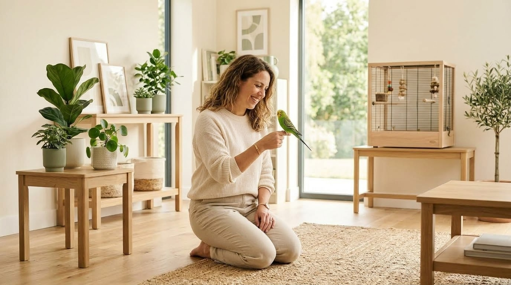

🐾 Pet Care
Practical starting points for feeding, grooming, exercise, enrichment and species-specific routines.
About Paws & Cuddles
Paws & Cuddles is built around practical pet-care education, thoughtful routines and the everyday moments that make life with animals special.
Our focus
Pet care can sometimes feel overwhelming. There are products to compare, routines to establish, behaviors to understand and countless opinions to sort through.
Paws & Cuddles aims to make everyday pet-care topics easier to explore by presenting information in a clear, friendly and approachable way.
The site covers a broad range of companion animals, from dogs and cats to rabbits, birds, small pets, reptiles and aquatic pets.

The goal
Good pet care is built through small, consistent choices: appropriate food, suitable environments, enrichment, grooming, activity, observation and plenty of care and attention.
Every animal is different. Species, age, environment, behavior and individual circumstances can all affect what is appropriate.
Explore Pet CareWhat you'll find here
Paws & Cuddles brings several everyday pet topics together in one welcoming place.
Practical starting points for feeding, grooming, exercise, enrichment and species-specific routines.
Helpful considerations for choosing grooming tools, feeding supplies, toys, enrichment items and everyday essentials.
Simple guides and resources designed to help pet families organize useful information in one place.
Ideas and inspiration around creating comfortable, enriching and enjoyable everyday environments for companion animals.
Our approach
We aim to explain everyday pet-care topics in straightforward language that is easy to understand and use.
Pet care includes understanding an animal's needs, providing suitable environments and paying attention to changes over time.
General information is a starting point. Species, age, health, behavior and environment can all affect what is appropriate.
General educational content does not replace individualized advice from a qualified veterinarian or other appropriate animal-care professional.
Keep it useful
Whether you're preparing for a new pet, improving an existing routine or simply learning more about animals, the aim is to focus on information that can be understood and applied thoughtfully.
Take what is relevant to your situation, check species-specific guidance and make choices that keep your companion's wellbeing at the center.
If you have a question, suggestion or idea for a future resource, we'd be happy to hear from you.
Contact Us